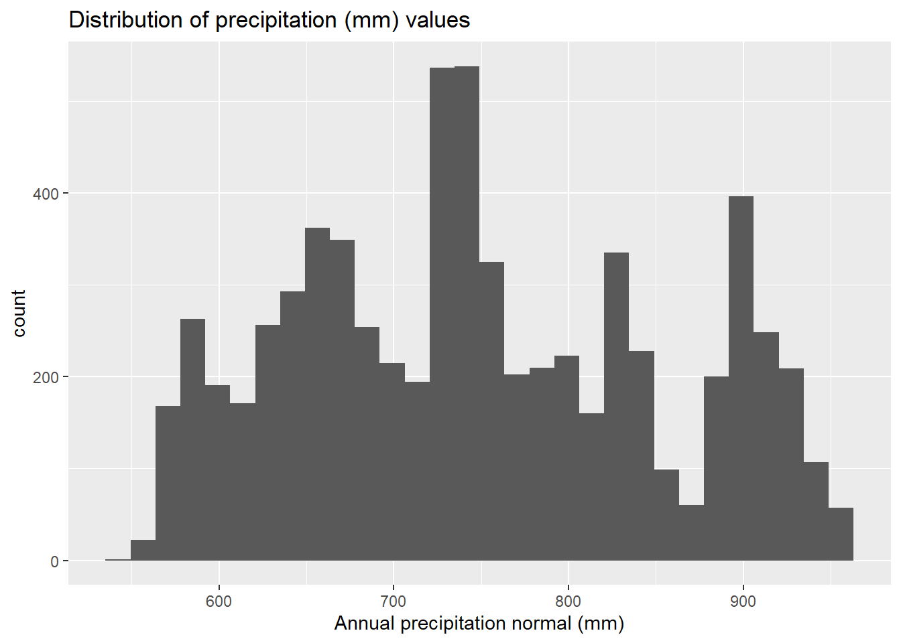
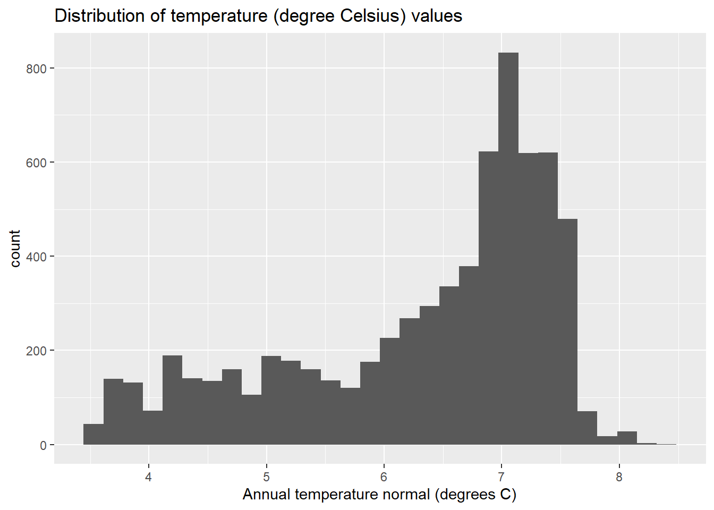
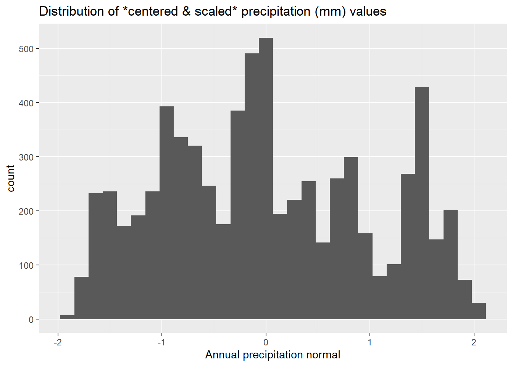
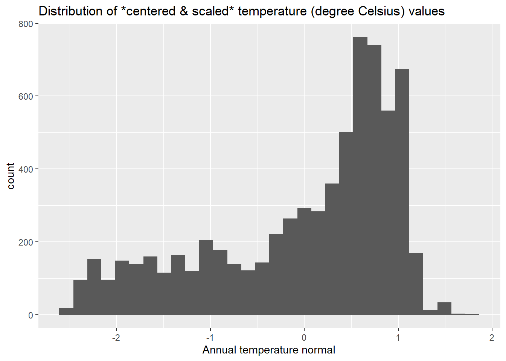
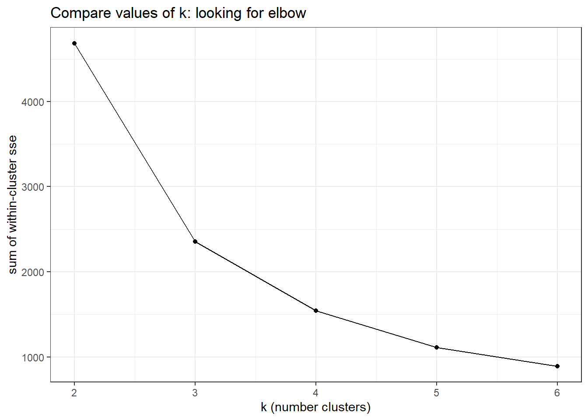
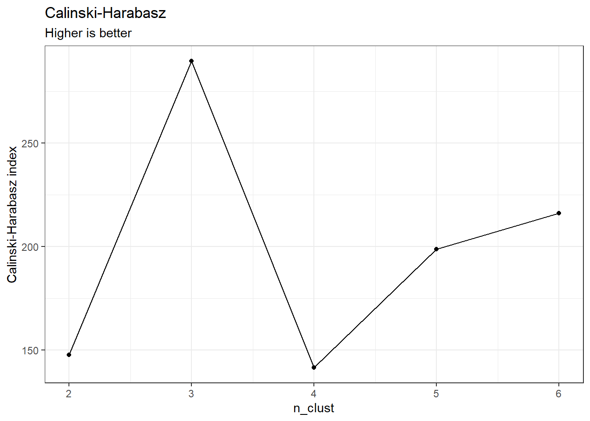
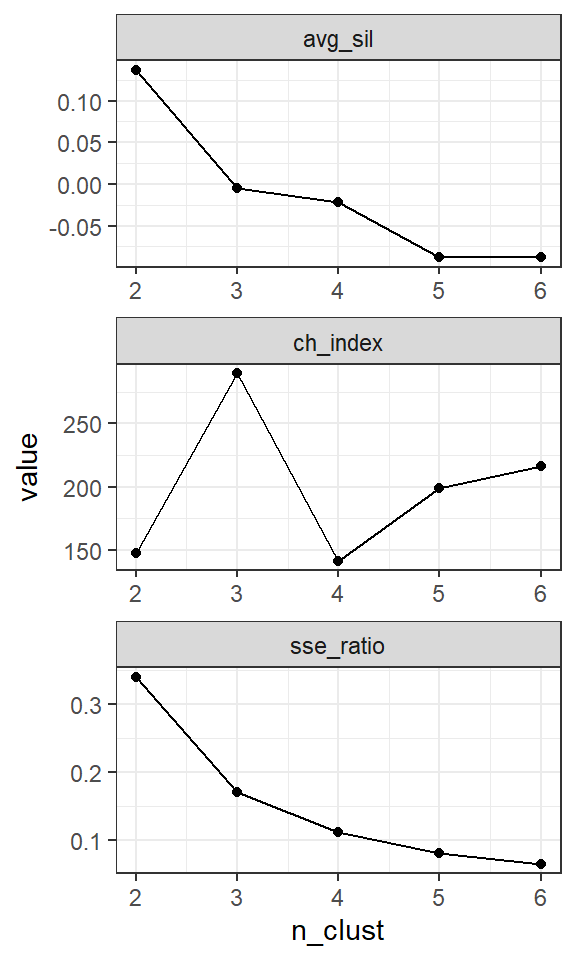
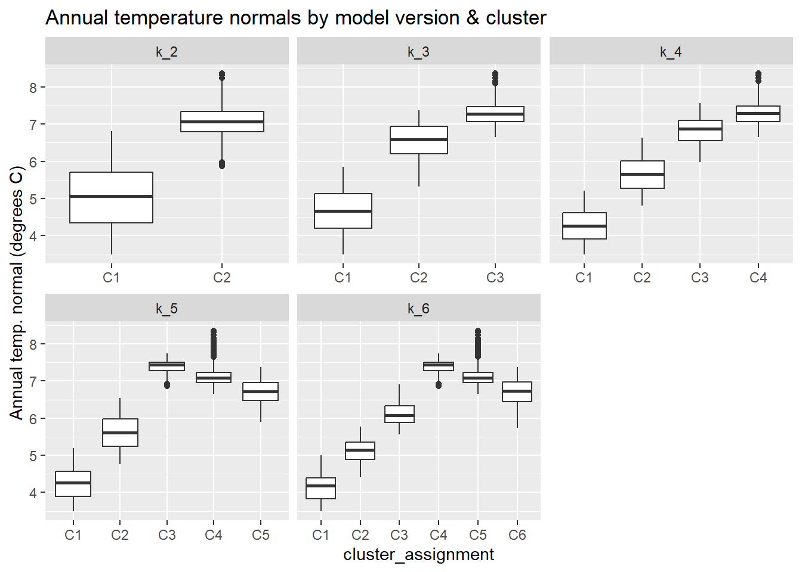

One of the comments we received from reviewers of this manuscript is that our clustering strategy does not explicitly consider climate. I explored what it would look like to include climate variables (MAT, MAP) along with soil properties when clustering. Initial interpretation of the results (see _refs/alluvial_compare_k78_clim.pdf) is that including climate variables results in clusters with greater heterogeneity in soil properties relative to the original versions(s), which is the opposite of what we want.
After Nic and I talked through this on March 8, 2024 one potential solution we discussed was to use the climate variables as another level of clustering, on top of the existing soil clusters. The idea is to use k-means to cluster by climate variables alone (using representative MAP and MAT values for each map unit), and then use soil cluster nested in climate cluster as our grouping scheme.
17.1 Overview
Quick outline of the process:
Already have the data we need (MAP, MAT) from 31-demo-weighted-centroids.qmd and 32-sample-climate-vars.qmd , make some plots to show the distributions
Pre-process data (standardize), subtracting the mean and dividing by 1 sd
PCA doesn’t seem necessary here because we only have 2 variables (MAT and MAP)
Specify model options, set up data structure and k-means recipe
Fit models (probably k = 2-5 is reasonable to start?)
Evaluate results
17.2 Set up
library(workflows)
Warning: package 'workflows' was built under R version 4.3.1
library(parsnip)
Warning: package 'parsnip' was built under R version 4.3.2
library(tidyverse)
── Attaching core tidyverse packages ──────────────────────── tidyverse 2.0.0 ──
✔ dplyr 1.1.2 ✔ readr 2.1.4
✔ forcats 1.0.0 ✔ stringr 1.5.0
✔ ggplot2 3.5.1 ✔ tibble 3.2.1
✔ lubridate 1.9.2 ✔ tidyr 1.3.0
✔ purrr 1.0.1
── Conflicts ────────────────────────────────────────── tidyverse_conflicts() ──
✖ dplyr::filter() masks stats::filter()
✖ dplyr::lag() masks stats::lag()
ℹ Use the conflicted package (<http://conflicted.r-lib.org/>) to force all conflicts to become errors
library(tidymodels)
Warning: package 'tidymodels' was built under R version 4.3.2
Warning: package 'broom' was built under R version 4.3.2
Warning: package 'dials' was built under R version 4.3.1
Warning: package 'scales' was built under R version 4.3.2
Warning: package 'infer' was built under R version 4.3.2
Warning: package 'modeldata' was built under R version 4.3.2
Warning: package 'recipes' was built under R version 4.3.2
Warning: package 'rsample' was built under R version 4.3.2
Warning: package 'tune' was built under R version 4.3.2
Warning: package 'workflowsets' was built under R version 4.3.2
Warning: package 'yardstick' was built under R version 4.3.1
── Conflicts ───────────────────────────────────────── tidymodels_conflicts() ──
✖ scales::discard() masks purrr::discard()
✖ dplyr::filter() masks stats::filter()
✖ recipes::fixed() masks stringr::fixed()
✖ dplyr::lag() masks stats::lag()
✖ yardstick::spec() masks readr::spec()
✖ recipes::step() masks stats::step()
• Dig deeper into tidy modeling with R at https://www.tmwr.org
library(glue)library(tidyclust)
Warning: package 'tidyclust' was built under R version 4.3.1
library(factoextra) # trying fviz_nbclust(), which gives elbow, silhouette, and gap statistic
Warning: package 'factoextra' was built under R version 4.3.2
Welcome! Want to learn more? See two factoextra-related books at https://goo.gl/ve3WBa
library(hopkins)
Warning: package 'hopkins' was built under R version 4.3.2
library(fpc)
Warning: package 'fpc' was built under R version 4.3.2
library(ggforce)
Warning: package 'ggforce' was built under R version 4.3.2
library(gt)
Warning: package 'gt' was built under R version 4.3.2
library(sf)
Warning: package 'sf' was built under R version 4.3.1
Linking to GEOS 3.11.2, GDAL 3.6.2, PROJ 9.2.0; sf_use_s2() is TRUE
d <-read_csv("data/ann_normals_precip_temp_mukey_centroids.csv") %>%select(-ID)
Rows: 7861 Columns: 6
── Column specification ────────────────────────────────────────────────────────
Delimiter: ","
dbl (6): mukey_short, ID, anntavg_norm, annprcp_norm, x, y
ℹ Use `spec()` to retrieve the full column specification for this data.
ℹ Specify the column types or set `show_col_types = FALSE` to quiet this message.
Rows: 6872 Columns: 12
── Column specification ────────────────────────────────────────────────────────
Delimiter: ","
dbl (12): mukey, claytotal_r_value, sandtotal_r_value, om_r_value, cec7_r_va...
ℹ Use `spec()` to retrieve the full column specification for this data.
ℹ Specify the column types or set `show_col_types = FALSE` to quiet this message.
# for translating MUKEY from gSSURGO to my shortened versioncwalk <- aoi_mu <-read.delim("data/gSSURGO_MN/mukey_new_crosswalk.txt", sep =",") %>%select(MUKEY, MUKEY_New)d_ids <-left_join(d, cwalk, by =c("mukey_short"="MUKEY_New"))d_incl <- d_ids %>%filter(MUKEY %in% mukeys_include$mukey) %>%rename(mukey = MUKEY)
Check out the MAP and MAT data:
head(d_incl)
ggplot(data = d_incl) +geom_histogram(aes(x = annprcp_norm)) +ggtitle("Distribution of precipitation (mm) values") +xlab("Annual precipitation normal (mm)")
`stat_bin()` using `bins = 30`. Pick better value with `binwidth`.

ggplot(data = d_incl) +geom_histogram(aes(x = anntavg_norm)) +ggtitle("Distribution of temperature (degree Celsius) values") +xlab("Annual temperature normal (degrees C)")
`stat_bin()` using `bins = 30`. Pick better value with `binwidth`.

# check for missing valuesd_incl %>%filter(is.na(annprcp_norm) |is.na(anntavg_norm))
• Centering and scaling for: all_numeric_predictors()
# confirm all predictors are labelled with role = predictor,# other vars should have other roles so they aren't included# in the model.summary(rec_spec)
# retain argument here tells prep to keep # the pre-processed training data # note this can make the final recipe size large, # so this is not the recipe object I probably want to use# in my list col belowcheck_prep <-prep(rec_spec, retain=TRUE)# using NULL here for new_data b/c I want the # pre-processed training data check_prepped_df <-bake(check_prep, new_data =NULL)head(check_prepped_df)
# save the pre-processed data in case I want to make some plots of # the distribution of the normalized (centered/scaled) variableswrite_csv(check_prepped_df, "./data/data_preprocessed_only_climate_20240310.csv")
`stat_bin()` using `bins = 30`. Pick better value with `binwidth`.

ggplot(data = check_prepped_df) +geom_histogram(aes(x = anntavg_norm)) +ggtitle("Distribution of *centered & scaled* temperature (degree Celsius) values") +xlab("Annual temperature normal")
`stat_bin()` using `bins = 30`. Pick better value with `binwidth`.

17.4 Set model options
# writing a custom function here so I can be explicit # about the options I'm choosing, and also use within the # list-col framework I set up with map() below. km_spec <-function(nclust){ tidyclust::k_means(num_clusters = nclust) %>% parsnip::set_engine(engine ="stats",nstart =10, # 1 is default, >1 recommendedalgorithm ="Hartigan-Wong", # H-W is defaultiter.max =20) # default is 10, wasn't always enough}
17.5 Set up data structure
Here I set up a dataframe that will catch my modeling results in list columns of the different model objects and return values. The first column I define specifies the range of different cluster sizes (k) that we will try.
For each unique value of k (2-6), this returns a model specification object (in the kmeans_spec column) based on the custom function I wrote above. The model specification has all the options set about how we want the algorithm to run (methods, number of starts, etc.). We need a different one for each value of k.
The kmeans_wflow column here holds our workflow objects. These objects combine our model specification (from kmeans_spec) with the data recipe (preprocessor) we made above (rec_spec, is same for all models).
# for each unique value of clusters (2:20), returns a model# specification (kmeans_spec) and a workflow (kmeans_wflow) # note that the workflow km_df <- km_df %>%mutate(kmeans_spec =map(n_clust, ~km_spec(nclust = .x)),kmeans_wflow =map(kmeans_spec,~workflow(preprocessor = rec_spec, spec = .x )) )# our current data structurehead(km_df)
# take a look at an example workflowkm_df$kmeans_wflow[3]
All the steps above were related to specifying different aspects of this model. Now we can actually fit the models.
Some troubleshooting here:
Started by specifying tidyclust::fit() but something weird was happening where my step_normalize() wasn’t included in the pre-processor recipe when I looked at the fitted model object.
If I specify parsnip::fit() , then step_normalize() is included and the values of the cluster centroids are in the expected ranges (centered, scaled).
I also tried this without explicitly specifying the package (so just fit() ) and it worked as expected.
# make a quiet version of fit(), so we can capture results # and any warning messages from the models # see troubleshooting notes belowquiet_fit <- purrr::quietly(.f = parsnip::fit)set.seed(4) # for reproducibility km_fit_df <- km_df %>%mutate(km_result =map(.x = kmeans_wflow,.f = quiet_fit,# data comes after .f b/c not vectorized over data = d_incl),km_fit =map(km_result, ~pluck(.x, 'result')),warn =map(km_fit, ~pluck(.x, 'warnings')),msg =map(km_fit, ~pluck(.x, 'messages')),n_iter =map_dbl(km_fit, ~pluck(.x, 'fit', 'fit', 'fit', 'iter' ))) # check out current data structurehead(km_fit_df)
# don't need anymore, cleaning uprm(km_df)
17.7.1 View messages & warnings
We can look at any warnings or messages from the modeling process:
km_fit_df %>%select(n_clust, warn, msg, n_iter)
17.8 Model metrics
See also section 7.5 in the Chapter by Tan et al. for more about cluster evaluation.
17.8.1 Extract metrics
metrics_df <- km_fit_df %>%mutate(# tot_sse = total sum of squared errortot_sse =map_dbl(km_fit, ~sse_total_vec(.x)),# tot_wss = sum of within-cluster ssetot_wss =map_dbl(km_fit, ~sse_within_total_vec(.x)),# sse ratio = wss / total sse, sse_ratio =map_dbl(km_fit, ~sse_ratio_vec(.x)) )rm(km_fit_df)metrics_simple <- metrics_df %>%select(n_clust, tot_sse, tot_wss, sse_ratio)metrics_simple
17.8.2 Plot Total WSS
metrics_simple %>%ggplot(aes(x = n_clust, y = tot_wss)) +geom_point() +geom_line() +theme_bw() +scale_x_continuous(breaks =c(2:6)) +xlab("k (number clusters)") +ylab("sum of within-cluster sse") +ggtitle("Compare values of k: looking for elbow")

17.8.3 Average Silhouette
From the {tidyclust} documentation:
Another common measure of cluster structure is called the silhouette. The silhouette of a single observation is proportional to the average distance from that observation to within-cluster observations minus the average distance to outside-cluster observations; normalized by the greater of these two average.
In principle, a large silhouette (close to 1) suggests that an observation is more similar to those within its cluster than those outside its cluster.
See also pg. 581 in Tan2018 Chap 7 Cluster Analysis: Basic Concepts and Algorithms
prepped_rec <-prep(rec_spec, retain=TRUE)# using NULL here for new_data b/c I want the # pre-processed training data baked_df <-bake(prepped_rec, new_data =NULL) %>%select(-mukey) dists <- baked_df %>%as.matrix() %>%dist(method ="euclidean")silh_df <- metrics_df %>%mutate(avg_sil =map_dbl(km_fit, tidyclust::silhouette_avg_vec,dists = dists),indiv_sil =map(km_fit, tidyclust::silhouette,dists = dists))indiv_sil_df <- silh_df %>%select(n_clust, indiv_sil) %>%unnest(indiv_sil) %>%mutate(across(.cols =c(cluster, neighbor),.fns = as.character))write_csv(indiv_sil_df, "data/kmeans_points_silhouettes_climate_only.csv")rm(metrics_df) rm(dists)rm(prepped_rec)
Higher silhouette is better (means observations are closer to their centroids than to other observations).
silh_df %>%ggplot(aes(x = n_clust, y = avg_sil)) +geom_point() +geom_line() +theme_bw() +scale_x_continuous(breaks =c(2:6)) +ggtitle("Overall Average Silhouette") +labs(subtitle ="Higher is better, possible values [-1,1]")
Using the implementation of the Calinski-Harabasz index from the {fpc} package. This is preferred to my original approach, where I used the NbClust function from {NbClust} package because I can give this function my clustering generated above (NbClust does its own run of kmeans but I can’t customize it to keep it consistent with
# calinhara wants an observations/variables matrix# as first argument (as opposed to a distance matrix)obsvar_mx <-as.matrix(baked_df)# function to extract and modify tidyclust clusters# into a integer vector, which I will pass to calinhara()create_clust_vec <-function(fit_obj){extract_cluster_assignment(fit_obj) %>%pull(.cluster) %>%str_replace(., "Cluster_", "") %>%as.integer()}# apply function to extract clusterings as integer vectors# map to get a c-h index value for every value of k (2-20)ch_metrics <- silh_df %>%select(n_clust, km_fit) %>%mutate(clustering_vec =map(km_fit, create_clust_vec),ch_index =map_dbl(clustering_vec,~ fpc::calinhara(x = obsvar_mx,clustering = .x) ))ch_metrics %>%ggplot(aes(x = n_clust, y = ch_index)) +geom_point() +geom_line() +theme_bw() +ylab("Calinski-Harabasz index") +ggtitle("Calinski-Harabasz") +labs(subtitle ="Higher is better") +scale_x_continuous(breaks =c(2:6))

17.8.5 WSS and Silhouette metrics on one plot

17.9 Save model fits
Will save these as Rdata so I can call them up and investigate them further as needed.
For each version of the model (each value of k, different numbers of clusters), a MUKEY is assigned to a specific cluster. Here, I’m pulling that data, shaping it into one dataframe (one row per MUKEY, cluster assignments in separate columns). I’m also adding back in the soil property data so we can use this in the next step when evaluating different cluster sizes.
`summarise()` has grouped output by 'model_ver'. You can override using the
`.groups` argument.
cluster_assignment
n
MAT normal (Celsius)
MAP normal (mm)
Min.
Max.
Mean
Min.
Max.
Mean
k_2
Cluster_1
2435
3.5
6.8
5.0
549
747
640
Cluster_2
4437
5.9
8.4
7.0
645
962
808
k_3
Cluster_1
1750
3.5
5.8
4.6
549
724
630
Cluster_2
2656
5.3
7.4
6.6
619
792
717
Cluster_3
2466
6.7
8.4
7.3
774
962
866
k_4
Cluster_1
1123
3.5
5.2
4.3
549
676
608
Cluster_2
1340
4.8
6.6
5.7
586
747
671
Cluster_3
2261
6.0
7.6
6.8
641
806
742
Cluster_4
2148
6.7
8.4
7.3
798
962
877
k_5
Cluster_1
1101
3.5
5.2
4.3
549
673
607
Cluster_2
1307
4.8
6.5
5.6
586
747
669
Cluster_3
1304
6.9
7.8
7.4
761
866
817
Cluster_4
1266
6.7
8.4
7.1
863
962
909
Cluster_5
1894
5.9
7.4
6.7
641
786
731
k_6
Cluster_1
867
3.5
5.0
4.1
549
663
597
Cluster_2
919
4.4
5.8
5.1
580
738
672
Cluster_3
711
5.6
6.9
6.1
616
730
653
Cluster_4
1290
6.9
7.8
7.4
761
866
818
Cluster_5
1266
6.7
8.4
7.1
863
962
909
Cluster_6
1819
5.7
7.4
6.7
664
786
735
clust_long %>%mutate(cluster_assignment =str_replace(cluster_assignment, "Cluster_", "C")) %>%ggplot() +geom_boxplot(aes(x = cluster_assignment, y = anntavg_norm)) +facet_wrap(vars(model_ver), axes ="all_x", drop =TRUE, scales ="free_x") +ggtitle("Annual temperature normals by model version & cluster") +ylab("Annual temp. normal (degrees C)")

clust_long %>%mutate(cluster_assignment =str_replace(cluster_assignment, "Cluster_", "C")) %>%ggplot() +geom_boxplot(aes(x = cluster_assignment, y = annprcp_norm)) +facet_wrap(vars(model_ver), axes ="all_x", drop =TRUE, scales ="free_x") +ggtitle("Annual precipitation normals by model version & cluster") +ylab("Annual precip normal (mm)")